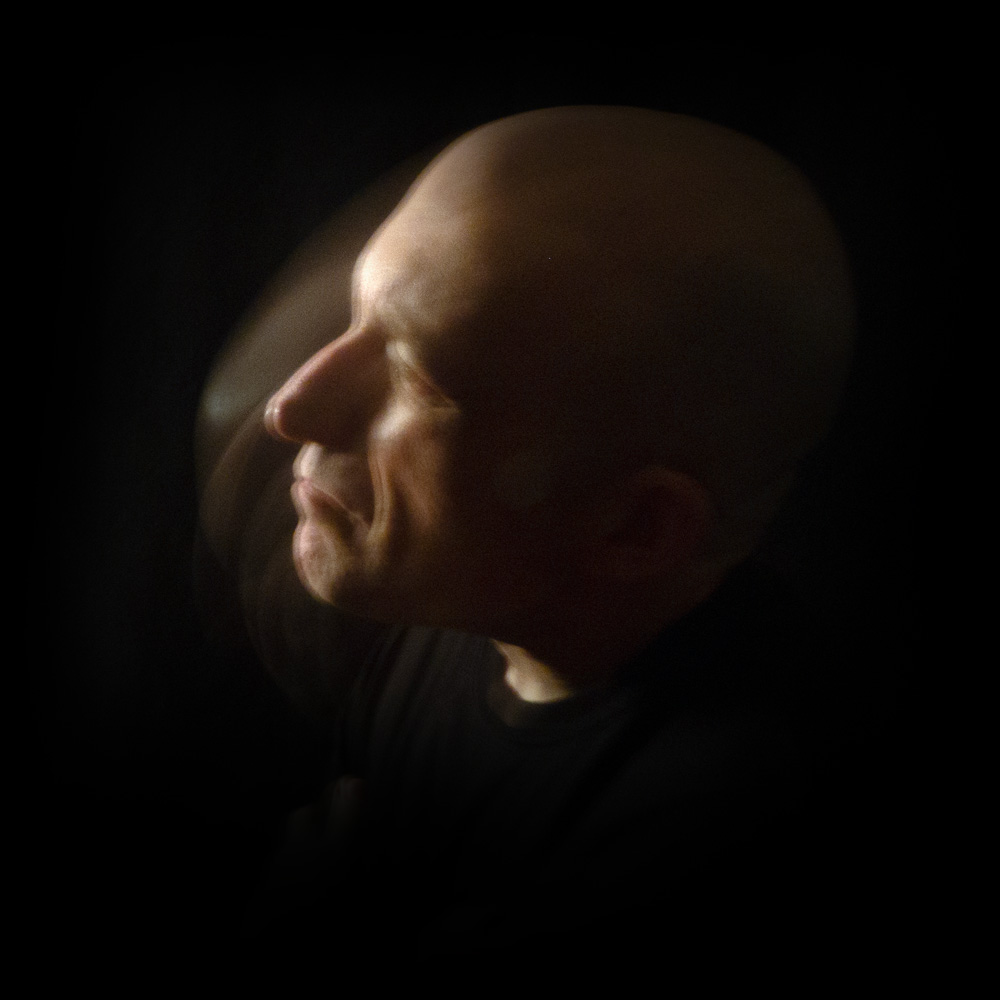
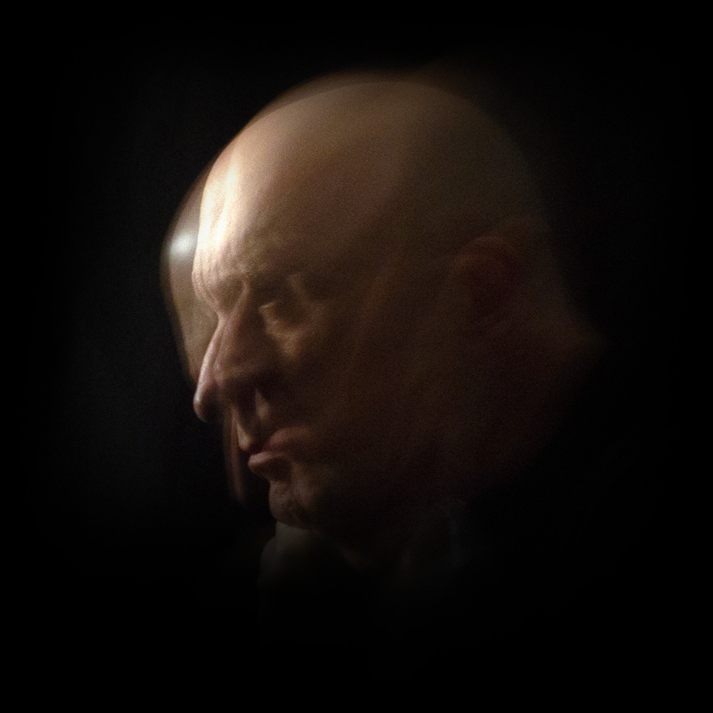
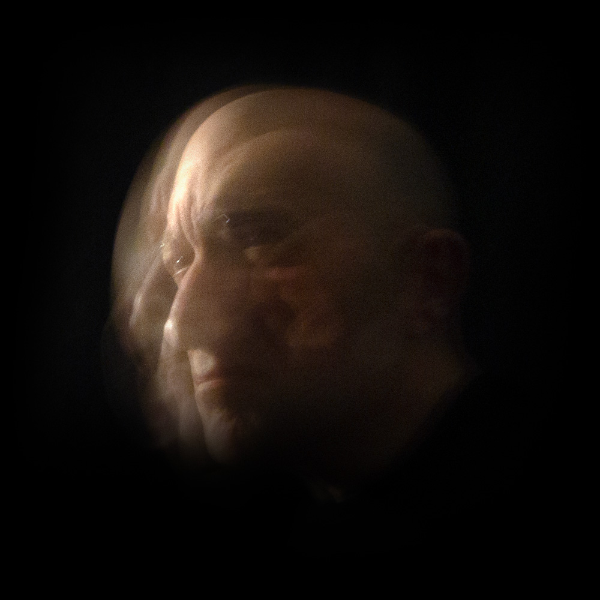
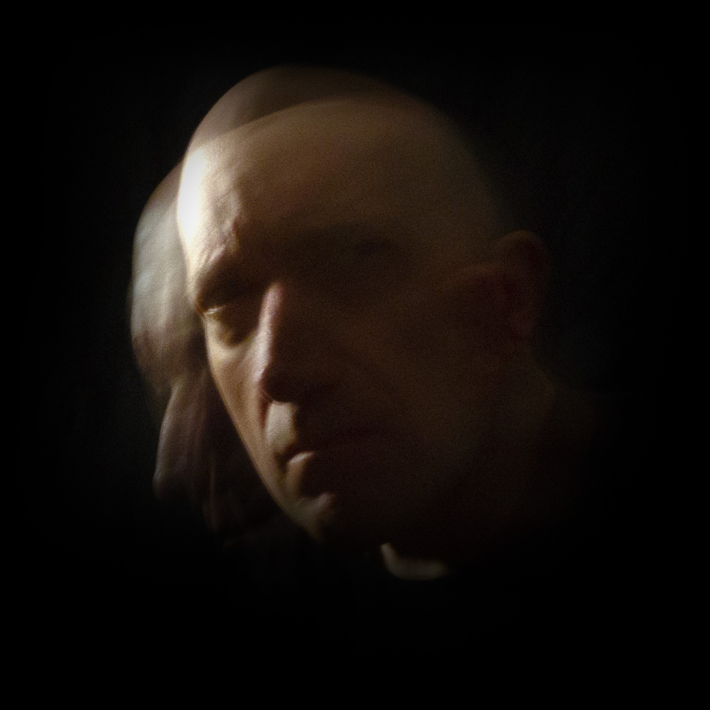
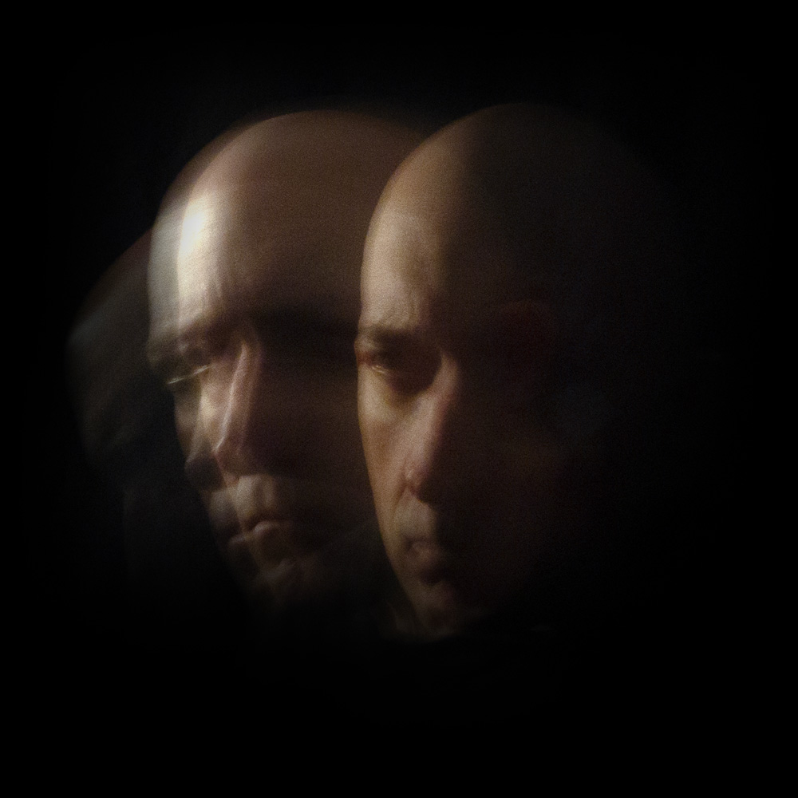
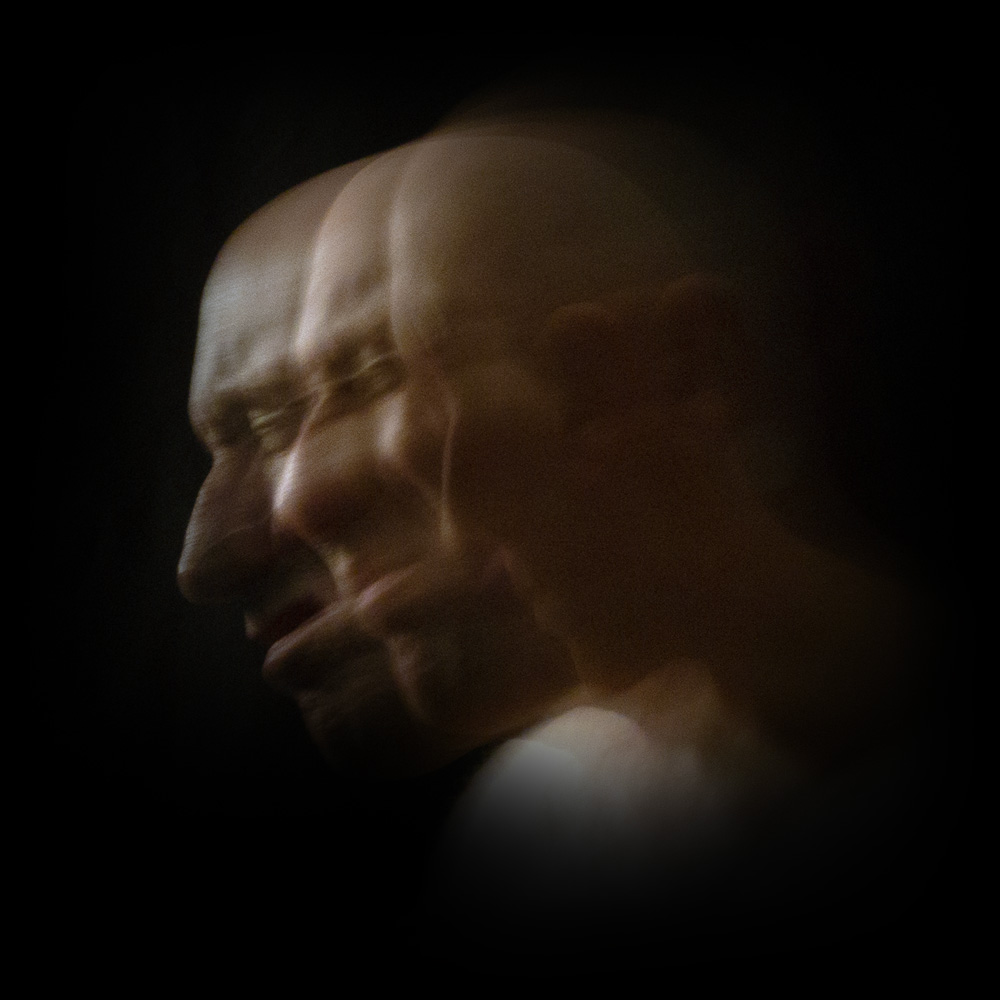
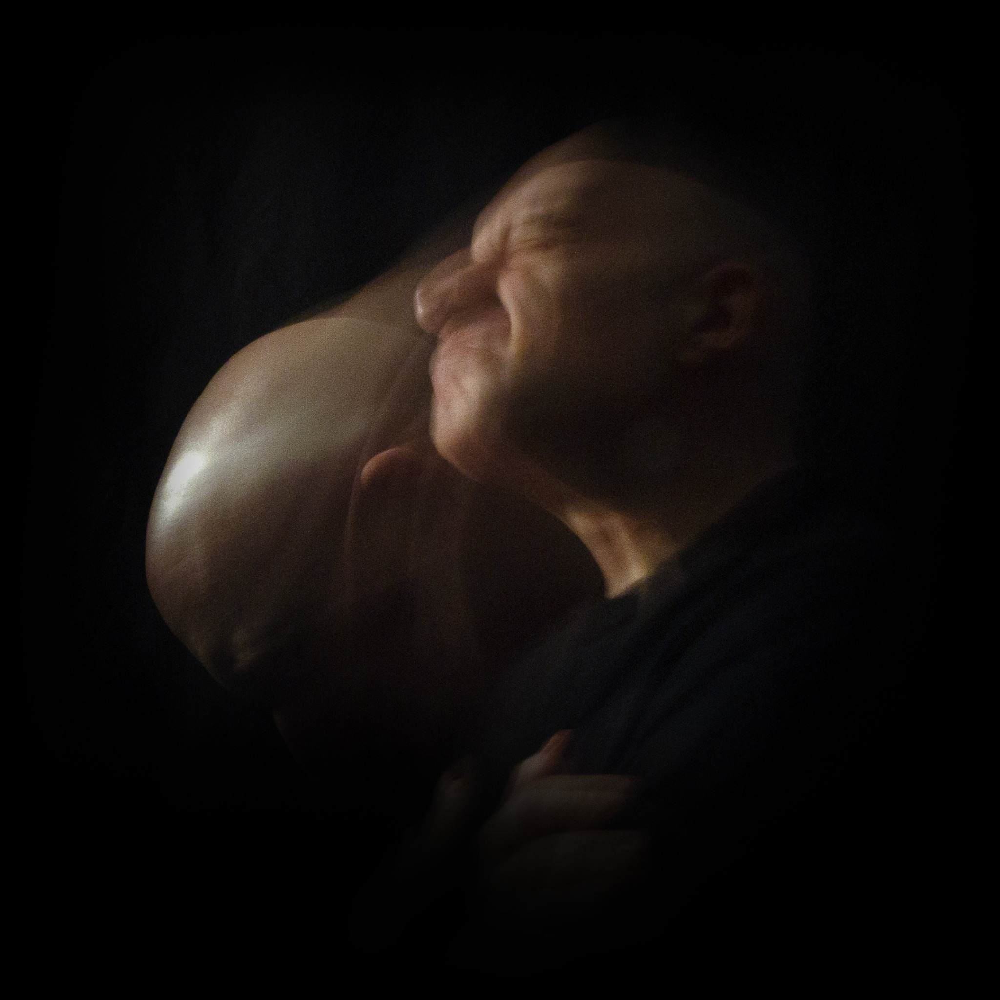
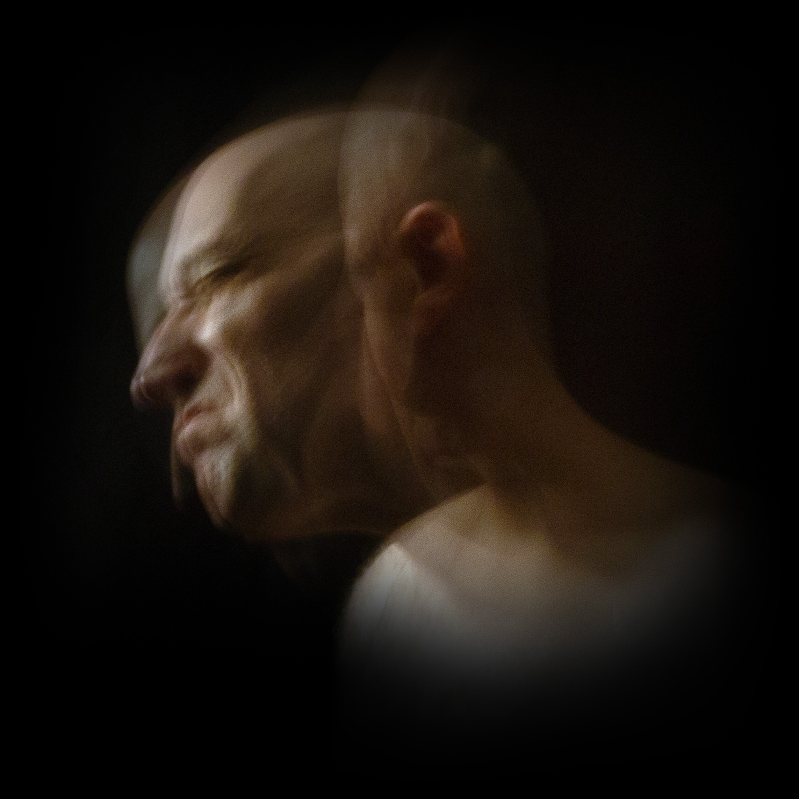

Small Movements
Project Statement
Small Movements is a series of eight photographic self-portraits exploring the relationship between physical movement and emotional expression.
Working with a stationary camera and prolonged exposures, I use small movements of my head and body to create overlapping forms within a single image. Faces appear to separate, repeat, or dissolve into darkness. These gestures are spontaneous but deliberate, allowing the photographs to move between recognizable expressions and abstraction.
The series considers how emotion is experienced physically and how a photograph might record more than a single instant. Rather than illustrating specific feelings, the images suggest shifting psychological states through movement, light, and the passage of time.








Artist Statement
My work explores action, movement, and emotional states through ethereal imagery and blurred motion, creating photographic narratives that exist between perception and abstraction. Working with 35mm film, I use my own body, gestures, and performance as source material, transforming fleeting physical moments into images that convey both energy and psychological tension. Through scanning, digital manipulation, and archival pigment printing, I preserve the grain, softness, and ambiguity of the photographic process.
I am interested in how emotion resists clear definition. Experiences of vulnerability, uncertainty, and transformation are rarely stable or singular; they shift with memory, environment, and our changing understanding of ourselves. Through color, gesture, blur, and distortion, my images move between recognition and disappearance. Figures emerge and dissolve, suggesting the instability of memory and the difficulty of separating what we see from what we feel.
Rather than offering a fixed account of a subject or moment, the work embraces ambiguity as a way to express the fragmented nature of lived experience. I approach photography not simply as a record of what exists, but as a means of giving form to what is fleeting, uncertain, and deeply felt.
About the artist
Nicholas D’Angelo is an artist and educator whose photographic practice explores movement, gesture, and emotional expression. His work uses motion and abstraction to examine the space between perception and representation.